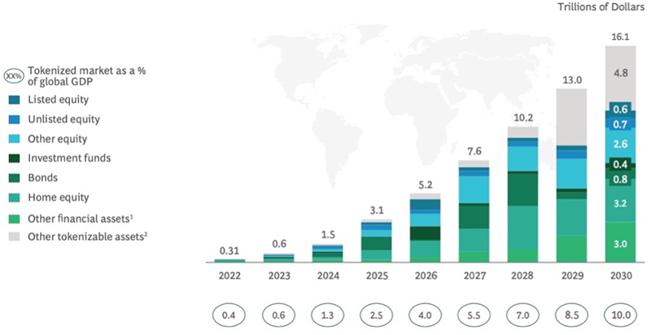
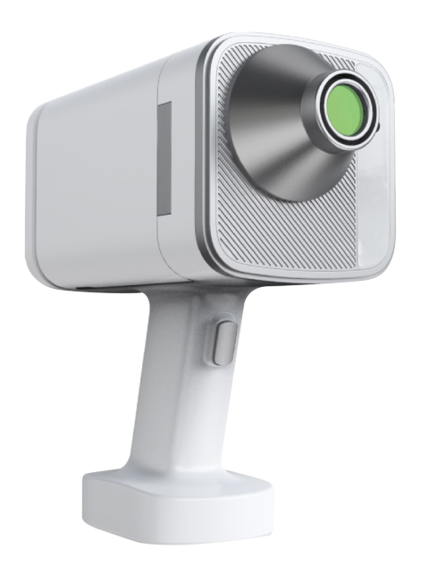
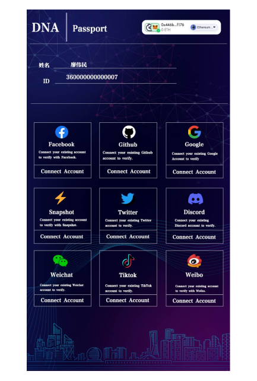
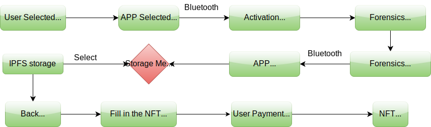
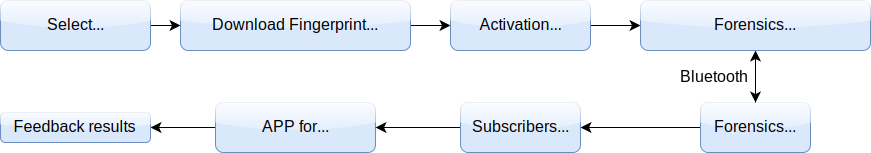
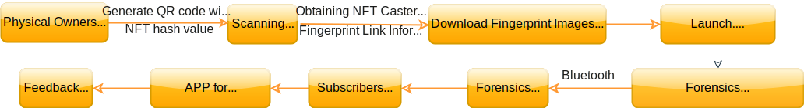
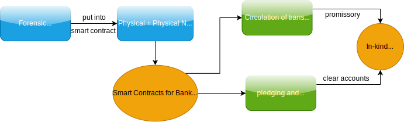

DNA Network is a link between blockchain and the real world.
Project Introduction
For a long time, numerous blockchain projects have ended in failure, mainly due to the fact that the linking approach (e.g. QR codes, RFIDs, etc.) between blockchain data and real objects are easy to be forged, and the high difficulty to achieve high accuracy of the original data before uploading it to the blockchain. In order to meet this challenge, Prof. Cheng Xi'en and computer vision experts from Fudan University jointly developed the smart forensic apparatus, through which a microscopic fingerprint image of the physical surface enlarged by N (N≥180) times is captured and uploaded to the IPFS for storage, and then collected by the identity authenticated public chain account and converted into the NFT. When verifying the fingerprints, the identity of the issuer is confirmed first, and then a microscopic image of the real object in the same location with the same magnification is captured and compared with the NFT fingerprint image through artificial intelligence algorithm, so as to link the trillion assets in real world to the blockchain world.
Market Size
DNA Network focuses on NFT tokenization of real-world tangible assets such as luxuries (jewelries, watches, bags, etc.), artwork (antiques, paintings, stamps, ceramics), and souvenirs (Yu-Gi-Oh! cards, Pop Mart, Disney memorabilia, etc.).
The market for tokenized assets is estimated around $16 trillion or 10% of global GDP by 2030, up 50,000% increase from $310 billion in 2022, according to a report by the Boston Consulting Group. This includes both tokenized on-chain assets (blockchain-related assets) and traditional assets (e.g., artwork, real estate, luxuries, cars, etc.).

Problems Solved
Issue 1
The core advantage of the blockchain is its trust mechanism, which allows you to trust the data generated on the chain regardless of the location and time. However, when it comes to accessing information off-chain, it is often relies on specific tools, known as Oracle. These Oracles are usually provided by centralized institutions, which are vulnerable to hacking or manipulation, undermining the accuracy of the raw data on the chain. If the accuracy of the raw data cannot be ensured, the use of blockchain technology will be meaningless, which is also one of the main problems of the failure of some previous blockchain projects.
Issue 2
Traditional blockchain data to track real object is mainly realized by means of QR code, barcode, and RFID, which are easy to be forged. This makes it difficult to guarantee the real object linking to the blockchain data not replaced or forged.
offerings
Smart Forensic Appratus
Non-destructive magnification of N times (N ≥ 180) for micro-photography of local details of the object.


DNA Passport
present
DNA Passport is an online-offline identity authorization dApp based on the Ceramic Network that allows users to collect various identity proofs called stamps from Web2 and Web3 authenticators; the stamps are provided by various Web2 and Web3 authenticators including Google, Facebook, Bright ID, ENS and Proof of Humanity. DNA Passport collects the stamps and summarizes them on blockchain based on real-name authentication information provided by offline users, e.g., Li Lei provides his stamp and access through authenticators, and authorization information was collected and access blockchain through his payment account. The user information can be visited through the payment account.
DNA Passport Enterprise Edition
The enterprise edition DNA Passport shall be applied through nodes, and typically takes 7 days. Community members will supervise and verify the application during the 7-day publicity period. Upon verification of the submitted information, the enterprise information will be uploaded after the publicity period. The community will penalize the nodes if they submit wrong information maliciously.
Implementation Principle
The smart forensic appratus can take images of the surface of physical objects with local magnification N (N≥180) times to generate fingerprint images. And these fingerprint images are uploaded to a centralized server or decentralized storage, and then the information is collected and converted into NFT (non-homogeneous tokens) through a real-name authenticated public chain account. For authentication, the verifier can take a locally enlarged N (N≥180) times image of the same location on the surface of the physical object and compare it with the fingerprint image previously stored on the blockchain through artificial intelligence algorithms.
Workflow of DNA Network
Generation of object NFT

Verification process for self-owned NFTs

Verification process for NFTs owned by others

DNA Network linked with RWA

Our Advantages
artificial intelligence algorithm
Prof. Cheng Xi'en developed an artificial intelligence comparison algorithm in conjunction with computer vision experts from Fudan University. The algorithm training requires a great deal of time and scientific researches, and currently has an accuracy rate of 99.99%.
Decentralization
It literally authorize each user instead of centralized organization to upload on the blockchain, and the users are responsible for their own personal information and for the data they upload.
Addressing practical issues
Help industries efficiently and safely with different practical problems such as anti-counterfeiting, circulation, trading, authentication, digitization, etc.
Who is the target customers for the product?
Our users are mainly B-end users and C-end users
B-side users mainly include: luxury companies such as LV, Time of Paris, Gucci, Swiss watches, etc., traditional companies such as Starbucks, Pepsi, Coca-Cola, Disney, Pop Mart, etc., various inspection organizations, authorization institutions, etc.
C-side users mainly include artists, masters, creators, individuals, cryptocurrency circle users, NFT users, users who use B-side products, web3 participants
cooperative partner
China Customs
Nanchang Museum
application scenario
RWA
RWA, short for Real World Asset tokenization, is the process of converting the value of tangible asset (real estate, high-value commodities, works of art) or intangible asset (ownership, right to income, right to use, etc.) of an interest in (bonds) into digital tokens. This allows assets to be stored and transferred without the need for a central institution, with the value projected to the blockchain for transaction.
The market for tokenized assets is expected to reach $16 trillion by 2030, according to a report by Boston Consulting Group. DNA Network focuses on NFT tokenization of real-world tangible assets such as luxuries (jewelries, watches, bags, etc.), artwork (antiques, paintings, stamps, ceramics), and memorabilia (Yu-Gi-Oh! decks, Pop Marts, Disney memorabilia, etc.). It solves the problem of RWA's inability to enforce offline clearing through smart contracts.
Physical NFT
Physical assets in the real world, such as artwork, luxury goods, and souvenirs, are transformed into irreplaceable digital tokens (NFTs) through blockchain technology. This enables these physical assets to have uniqueness in the digital realm while retaining their physical presence and value in the real world. The emergence of physical NFTs expands the scope of digital assets, provides value support for digital assets, and offers new ways to collect, trade and prove ownership of real objects.
metaverse
Create physical digital assets in the meta-universe that represent physical existence through the authentication of smart forensics apparatus. The scope includes digitized artwork, luxury goods, souvenirs, etc. By projecting digital existence of physical assets in the meta-universe, we can circulate and trade them in the digital world, while maintaining their authenticity and value. This provides users with the opportunity to experience and interact with physical assets in a virtual environment, while creating new digital economic and cultural ecosystems.
Smart Customs: Virtual Bonded Warehouse
Virtual bonded warehouses are simulated bonded warehouses realized through digital technology, smart forensics authentication and blockchain technology, allowing goods to be stored, managed and traded in a virtual environment without the need for actual physical warehousing. The concept is designed to improve global trade efficiency and reduce logistics costs, combined with blockchain to ensure transaction transparency and security. The virtual bonded warehouse creates flexible trade options, simplifies trade processes, facilitates the development of the global digital economy, and is a next-generation standard that China Customs is leading the advancement of.
digitisation
The traditional market is undergoing rejuvenation and digital transformation, with high-net-worth Generation Z participants dominating art investments, showing a preference for personalization and digitalization. Digital transformation encompasses not only the traditional business of investment, collecting, trading and exhibition, but also emerging businesses such as appraisal and evaluation and financial derivatives services based on digital technology. DNA Network continues to drive innovation and the digital revolution, presenting the traditional market with unprecedented opportunities to redefine the high-value product experience, shaping credibility, brand stickiness, and loyalty, while preserving the brand's authenticity and core values.
Intelligent Logistics
Based on the DNA Network blockchain service, combined with the smart forensic Internet of Things (IoT) technology, we can build a collaborative alliance consisting of manufacturers, warehouses, logistics providers and customers, the tracks from the production, distribution, and logistics to the customer are credibly recorded, to solve the problem of information isolation, the lack of transparency and other issues. We applied a unique DNA Network technology that combines physical closure and non-falsifiable labels with fingerprint data verification, to provide buyers with enhanced security and to ensure that items are not tampered or damaged.
Awards we have received
Project Progress
The project was launched in 2017, and the R&D process overcame three key challenges in 2018, including target selection, identity extraction and identification technology, etc. The development of smart apparatus was completed in 2019, and the development of F, B and C series was completed in 2020, and compatibility with calligraphy, paintings, antiques and ceramics was completed in 2021, and compatibility with metals, jewelry and oil paintings was completed in 2022 Compatible. In 2023, we focus on marketing.
Future
By the end of 2023, we will complete the product development of D series, and in 2024 we will complete the development of DID system of DNA.PassPort, as well as the development of multi-chain payment system and its front-end functions. We will expand the system compatibility toward a more broad products in the future, such as watches, bags and other products! Meanwhile, in 2024, we will start the promotion of the real object NFT.
Our Team
xienCheng
PhD, Associate Professor, Master Supervisor, engaged in the research and application of machine vision, big data and blockchain technology. He is committed to the applied research and practice of new generation of information technology in industry. In the past five years, Dr. Cheng has undertaken and participated in more than ten research projects, published more than ten SCI/EI research papers, and authorized with six national invention patents and more than ten utility model patents. Dr. Cheng is an expert of Jiangxi Province 03 Special Guidance Expert Group, a member of China Invention Association, the executive director of Jiangxi Blockchain Industry Association, and an expert consultant of Jingdezhen Copyright Association.
wenLiu
Co-founder, CTO
Internet industry experts, worked for Huawei since 2010, responsible for Huawei's global cellphone configurator project, making outstanding contributions to Huawei's cellphone business. In 2016, he focused on the blockchain industry, as the founder of Star CloudShang blockchain company, and developed public chains, digital wallets, smart contracts, blockchain exchanges and blockchain basic tools, and has extensive experience and leadership in the blockchain industry.
binHuang
With 10 years of experience in hardware R&D and IT system architecture and management, he has been a team leader for technical system planning in several well-known enterprises. He has been committed to the research and development of artificial intelligence and blockchain technology, and has developed blockchain framework and commercial application projects for many well-known large enterprises and startups. He has rich experiences in computer system design, product development and engineering project management.